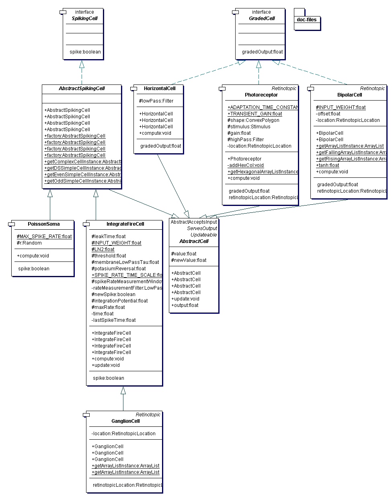

In the context of the simulation, cells are the components that are simulated. The simulation requires its
components to implement {@link ch.unizh.ini.friend.simulation.Updateable}, which provides the simulation
thread with the methods compute(float dt) and update(). The cell recomputes its
state on compute(float dt) but makes its new output available to other cells only on
update(). Inheriting the default implementations for this 'double-buffering' from
{@link ch.unizh.ini.friend.simulation.cells.AbstractCell}, a cell only needs to implement its own
computations in compute(float dt) and at the end of that method assign its new output
to the field newValue.
There are currently two types of cells: the first type implements {@link ch.unizh.ini.friend.simulation.cells.GradedCell} and its output is its analog signal response; the second type implements {@link ch.unizh.ini.friend.simulation.cells.SpikingCell} and its output is its spiking rate. Current implementors of GradedCell are: {@link ch.unizh.ini.friend.simulation.cells.Photoreceptor}, {@link ch.unizh.ini.friend.simulation.cells.HorizontalCell} and {@link ch.unizh.ini.friend.simulation.cells.BipolarCell}. Current implementors of SpikingCell are: {@link ch.unizh.ini.friend.simulation.cells.AbstractSpikingCell} and its descendants {@link ch.unizh.ini.friend.simulation.cells.IntegrateFireCell}, {@link ch.unizh.ini.friend.simulation.cells.GanglionCell} and {@link ch.unizh.ini.friend.simulation.cells.PoissonSoma}.
{@link ch.unizh.ini.friend.simulation.cells.AbstractSpikingCell} provides a few factory methods to construct cortical cells, namely: Odd and even simple cells, which are (paradoxically) the most complicated cells to build, because they have push-pull input from sets of retinal ganglion cells; Complex cells and direction selective simple cells, which use simple combinations of basic simple cells (note how they construct and add simple cells to the simulation for their own use).
All of these cells are instantiated in {@link ch.unizh.ini.friend.simulation.SimulationSetupFactory}.
The package UML is
